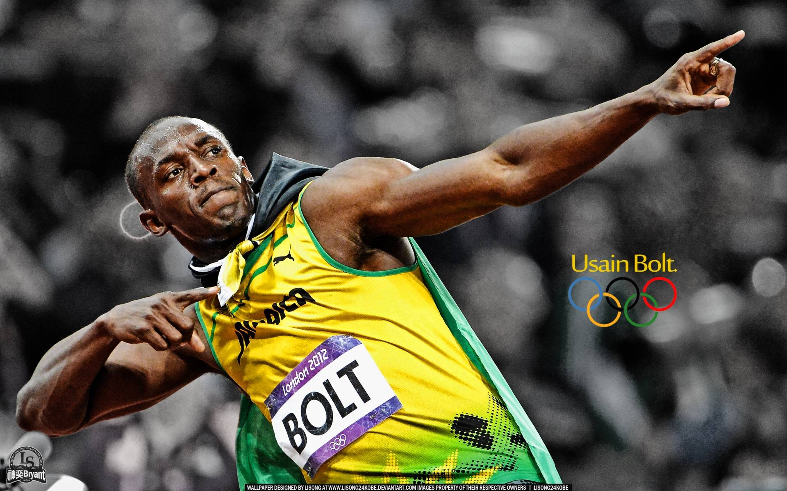

The Fastest Man that Runs Faster than Lightning (Athletes) : Usain Bolt

The Fastest Man that Runs Faster than Lightning (Athletes)
Usain Bolt has been, quite simply, the face of the last three Olympic Games. To win the event’s blue riband event, the 100m, just once, guarantees Olympic immortality. To do it three times at consecutive Games, and add the 200m and 4x100m relay titles to the mix, gives him a good case to be considered the greatest athlete of all time. Still only 33, he is a living legend.
Early LifeBolt was born on 21 August 1986 in Sherwood Content, Jamaica. He grew up as a sports-obsessed kid, excelling in football and cricket. At high school, his cricket coach encouraged him to try athletics seriously. It was a good decision, By the age of 16, in 2002, he was world junior champion.
Career
Usain Bolt's career is defined by his performances at the Olympics. At the Beijing 2008 Olympics, he broke his previous world best time in the 100m with a time of 9.69 seconds as well as broke the 200m world record with a time of 19.30 seconds. He is the only athlete to win the Olympic gold medal in the 100m and 200m sprints in three consecutive Olympic games
Here is a list of all of the gold medals and world records that Usian Bolt had as of August 2014: World Records: 100m world record - 9.58 seconds 200m world record - 19.19 seconds 4x100m relay world record - 36.84 seconds Gold Medals: Eight Olympic Gold Medals Eleven World Championship Gold Medals One World Junior Championship Gold Medal Awesome! Usain Bolt has so many amazing accomplishments
By 2007, he was the fastest man in history, setting his first 100m world record, and a year later, at the Beijing 2008 Olympic Games, he rose to international superstardom. In China, Bolt triumphed in the men’s 100m sprint, and then added the 200m and 4x100m title to secure a legendary triple. He broke the world record in all three events.